|
|
Wei Hu 胡伟, associate professor Department of Computer Science & Technology Office: Room 612, Sci-Tech Building, BUCT |
| About me |
I am currently an associate professor in the Computer Science Department at BUCT, working in the visual media group.
I was born in 1979, Jiangxi province of China. In 1995, I was enrolled in the Computer Science Department at Dalian University of Technology. I recieved the Ph.D degree from the Computer Science Department at Tsinghua University in 2006, under the guidance of Prof. Kaihuai Qin. I visited the Computer Science Department of CUHK as a research assistant in 2005, supervised by Prof. Hanqiu Sun, Before joining BUCT in 2008, I worked for a start-up company as the technology director.
My research interests are in computer graphics and computer vision, in particular in face recognition, real-time global illumination rendering, image editing, image recognition, and multiple-projector based tiled display.
| Teaching |
I teach two courses, Advanced Computer Graphics is for graduate students, and Digital Media Computing is for undergraduate students
| Selected Publications (Visit Google Scholar for full list) |
Please refresh the page to get the most current information
Artificial Intelligence
 |
Yuhang Su, Wei Hu*, Qiming Xu, Fan Zhang. "AMG-Embedding: a Self-Supervised Embedding Approach for Audio Identification", ACM Multimedia 2024. |
| 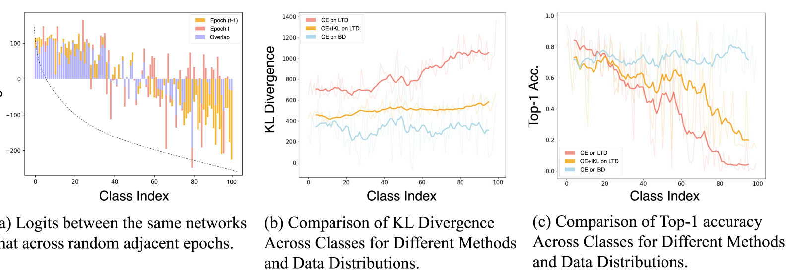 | Qihao Zhao, Yalun Dai, Shen Lin, Wei Hu, Fan Zhang, Jun Liu. "LTRL: Boosting Long-tail Recognition via Reflective Learning", ECCV 2024 (Oral). |
 |
Qihao Zhao, Yalun Dai, Hao Li, Wei Hu, Fan Zhang, Jun Liu. "LTGC: Long-tail Recognition via Leveraging LLMs-driven Generated Content", CVPR 2024 (Oral). |
| 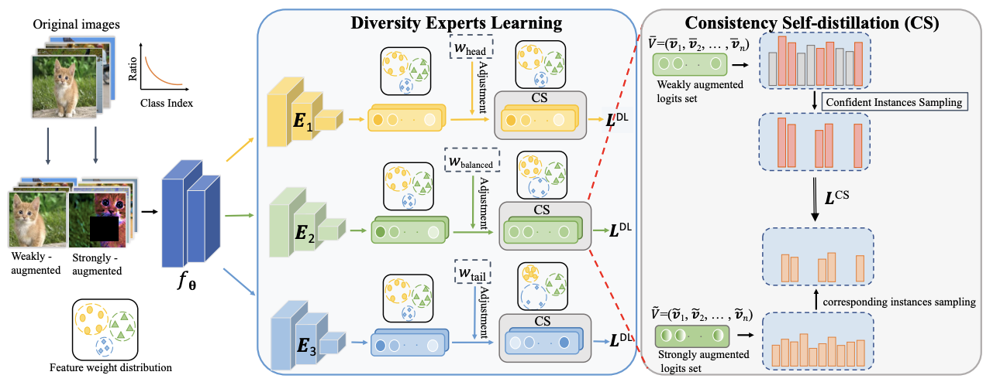 | Qihao Zhao, Chen Jiang, Wei Hu, Fan Zhang, Jun Liu. "MDCS: More Diverse Experts with Consistency Self-distillation for Long-tailed Recognition", ICCV 2023. |
 |
Qihao Zhao, Yangyu Huang, Wei Hu*, Fan Zhang, Jun Liu. "MixPro: Data Augmentation with MaskMix and Progressive Attention Labeling for Vision Transformer", ICLR 2023. |
| 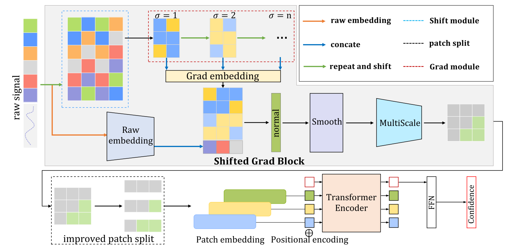 | Wei Hu, Fangnian Wang, Qiang Yin, Fan Zhang. "SGT: A Generalized Processing Model for 1-D Remote Sensing Signal Classification", IEEE Geoscience and Remote Sensing Letters, 2022. |
| 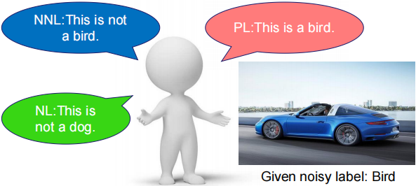 | Qihao Zhao, Wei Hu*, Yangyu Huang, Fan Zhang. "P-DIFF+: Improving Learning Classifier with Noisy Labels by Noisy Negative Learning Loss", Neural Networks, 2021. |
 |
Wei Hu, Yangyu Huang, Fan Zhang, Ruirui Li and Hengchao Li. "SeqFace: Learning discriminative features by using face sequences", IET Image Processing, 2021. (PDF). |
 |
Wei Hu, Qihao Zhao, Yangyu Huang, and Fan Zhang. "P-DIFF: Learning Classifier with Noisy Labels based on Probability Difference Distributions", ICPR 2020. |
| 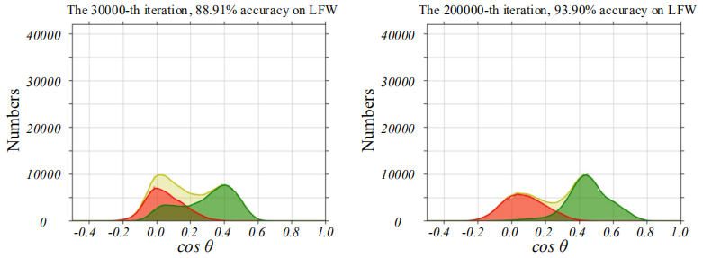 | Wei Hu, Yangyu Huang, Fan Zhang, and Ruirui Li. "Noise-Tolerant Paradigm for Training Face Recognition CNNs", CVPR 2019. (PDF, Video, Code). |
 |
Ruirui Li, Wenjie Liu, Lei Yang, Shihao Sun, Wei Hu, Fan Zhang, Wei Li. "Deepunet: A deep fully convolutional network for pixel-level sea-land segmentation", IEEE Journal of Selected Topics in Applied Earth Observations and Remote Sensing 11.11 (2018): 3954-3962.. (PDF). ESI Highly Cited Paper. |
 |
Wei Hu, Yangyu Huang, Wei Li, Fan Zhang, and Hengchao Li. "Deep Convolutional Neural Networks for Hyperspectral Image Classification", Journal of Sensors, article ID. 258619, vol. 2015, 15 pages, 2015. (PDF, Code + Data), ESI Highly Cited Paper. |
Real-time GI Rendering
| 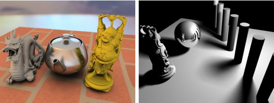 | Wei Hu, Yangyu Huang, Fan Zhang, Ruirui Li and Hengchao Li. "Ray tracing via GPU rasterization", The Visual Computer(special issue on CGI 2014), 30(6):697-706, 2014. (PDF, Video) |
 |
Wei Hu, Zhao Dong, Ivo Ihrke, Thoster Grosch, Guodong Yuan and Hans-Peter Seidel, "Interactive Volume Caustics in Single-Scattering Media", Proceedings of ACM SI3D, pp.109-117, 2010 (Result image is selected for Back Cover of the conference proceedings and Informatik Spektrum, 33(3), 2010.) (PDF, Video) |
| 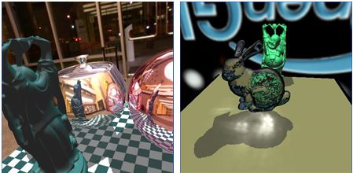 | Wei Hu and Kaihuai Qin, "Interactive Approximate Rendering of Reflection, Refraction and Caustics", IEEE Transaction on Visualization and Computer Graphics, 13(1):46-57, Jan. 2007. (PDF, Video) |
| 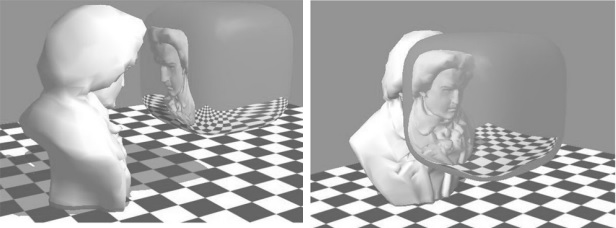 | Wei Hu, Kaihuai Qin, Huawei Wang, and Yafeng Li. "Reflection and Refraction on Implicit Surfaces", Journal of Computer Science & Technology, 21(2):166-172, 2006. (PDF). A preliminary version appeared in Proc. of Pacific Graphics 2005. |
Image Editing
| Wei Hu, Wei Li, Fan Zhang, Qian Du. "Real-time Decolorization using Dominant Colors". arXiv:1404.2728, 2014. (PDF, Supplementary, Video) | |
 |
Wei Hu, Zhao Dong, Guodong Yuan. "Edit Propagation via Edge-Aware Filtering". Journal of Computer Science &Technology, 27(4): 830-840, 2012. (PDF, Video) |
| Wei Hu, Guodong Yuan, Zhao Dong, Xueming Shu. "Improved Single Image Dehazing using Dark Channel Prior", Computer Research & Development, 47(12), 2010. (in Chinese) | |
 |
Wei Hu, Kaihuai Qin, "Fast multi-resolution colorization of high-resolution gray images", Journal of Computer, 32(5):1062-1068, 2009. (in Chinese) |
| Products |
Music Audio/Video Analysis
 |
AIMusic is a WeChat mini application which can analyze a piano playing audio/video, and score the playing with specific details of errors (AIMusic). |
Face/Vehicle Recoginition Solution
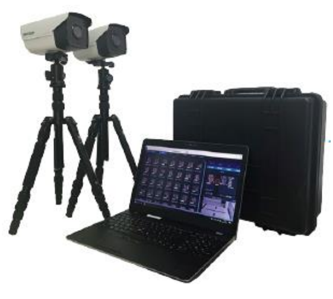  |
We offer a complete face/vehicle recognition solution, which can employ PC, Android, or custom AI chips to provide detection, tracking, verification and identification services. The solution has been applied in many large projects.��CorsFace�� |
Multiple Projector based Tiled Display
  |
Multi-projector, large-scale displays are broadly used in visually intensive applications. Since 2007, I have solely developed a software (DPMPro) for constructing a multi-projector tiled-display system automatically with the help of one or multiple DSLR cameras. DPMPro is very suitable for large arbitrary display surfaces, and currently is a commercial product widely used in China. The largest scale system built with our software is located in Luoyang, China, with 9 PCs and 19 full HD projectors collaborated together to display an active stereo video with 80 million pixels per frame. Please visit our partners for more applications supported by DPMPro. (InfoPlay, Betop,...) |
Super Web Master
 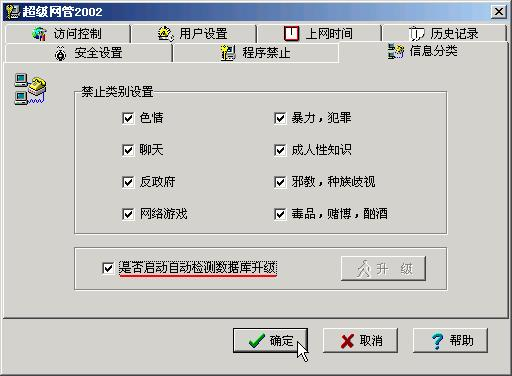 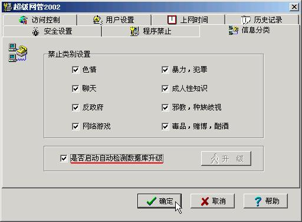 |
Super Web Master is an internet visiting management software, which has over 100,000 copies sold. I solely developed this software in 2000. The project won National Innovation Fund For Technology Based Firms funded by the Ministry of Science and Technology of China in 2001. (No. 01C26222120814). |